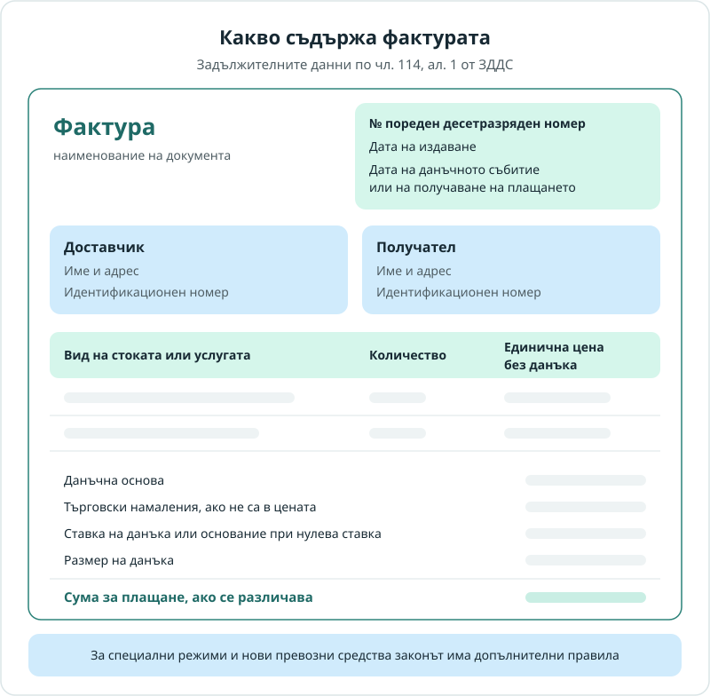
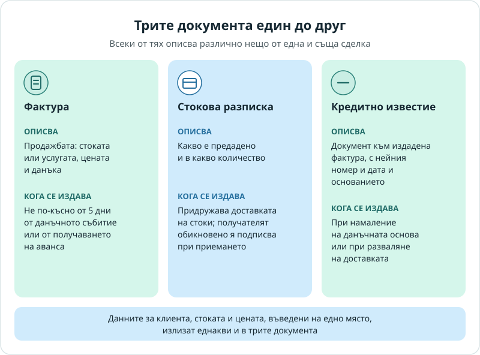

Съвети
Фактура: какво трябва да съдържа и как да я издавате по-бързо
Фактурата е документът, с който доставчикът описва продадената стока или услуга, нейната цена и данъка към нея. Законът за данъка върху добавената стойност (ЗДДС) определя какви данни съдържа фактурата и в какъв срок се издава. В много сделки до нея стоят стоковата разписка и кредитното известие, а част от ръчната работа по издаването може да поемат шаблони и програми. Информацията е обща, затова конкретния случай на Вашия бизнес уточнете със счетоводителя си.
Автор: Георги ТодоровОбновено
Какво е фактура и в какъв срок се издава?
Фактурата описва една доставка: кой продава, на кого, какво, в какво количество, на каква цена и с какъв данък. Доставчикът и получателят я пазят като запис за сделката.
Според ЗДДС доставчикът е длъжен да издаде фактура за доставката, както и при получено авансово плащане. Законът изброява и случаи, в които фактура може да не се издава, например когато получателят е физическо лице, което не е данъчно задължено.
Срокът е не по-късно от 5 дни от датата на данъчното събитие за доставката, а при авансово плащане не по-късно от 5 дни от получаването на плащането. За доставки до други държави от ЕС законът има отделен срок. Датата на данъчното събитие при Вашите сделки е добре да уточните със счетоводителя си.
Кои данни са задължителни според ЗДДС?
Член 114, ал. 1 от ЗДДС изброява данните, които фактурата задължително съдържа. Тези данни често се наричат реквизити на фактурата. По реда в закона това са:

- наименование на документа;
- пореден десетразряден номер, който съдържа само арабски цифри и определя фактурата еднозначно;
- дата на издаване;
- име и адрес на доставчика и неговият идентификационен номер;
- име и адрес на получателя и неговият идентификационен номер;
- количеството и вида на стоката или вида на услугата;
- датата на данъчното събитие или датата, на която е получено плащането;
- единичната цена без данъка и данъчната основа (сумата, върху която се начислява данъкът), както и предоставените търговски намаления, ако не са включени в цената;
- ставката на данъка, а при нулева ставка или неначисляване на данък основанието за това;
- размера на данъка;
- сумата за плащане, ако тя се различава от сбора на данъчната основа и данъка.
Законът има и точка за нови превозни средства при доставки в рамките на ЕС, както и правила за специални режими, при които част от данните могат да отпаднат. Дали някое от тези правила се отнася за Вас, ще Ви каже счетоводителят.
Какво е стокова разписка?
Стоковата разписка е документ, който придружава доставката на стоки и описва какво е предадено и в какво количество. Получателят обикновено я подписва при приемането, така че и двете страни имат запис какво точно е доставено. Когато една доставка съдържа много артикули, разписката помага на получателя да провери количествата още при приемането.
На практика стоковата разписка служи за отчет на движението на стоката, а фактурата описва продажбата с цената и данъка. Дали във Вашата дейност са нужни и двата документа и как да ги свържете, уточнете със счетоводителя си.
Какво е кредитно известие?
Кредитното известие е документ към вече издадена фактура. Според ЗДДС доставчикът издава известие към фактурата при промяна на данъчната основа или при разваляне на доставката: кредитно известие при намаление на основата или при разваляне, а дебитно известие при увеличение.
Освен данните на фактурата, известието съдържа номера и датата на фактурата, към която е издадено, както и основанието за издаването си. Кога точно е нужно известие и кога друга корекция, решава счетоводителят според конкретната ситуация.
Трите документа един до друг
Фактурата, стоковата разписка и кредитното известие често се издават за една и съща сделка, но всеки от тях описва различно нещо. При продажба на стоки с доставка например може да има стокова разписка при предаването, фактура за продажбата и по-късно кредитно известие, ако данъчната основа намалее.
Когато данните за клиента, стоката и цената се въвеждат на едно място, и трите документа излизат с еднакви данни и няма нужда от ръчно преписване.

Как да ускорите издаването?
Повечето време при издаването отива за преписване на едни и същи данни и за проверка дали номерът и сумите са верни. Ръчната работа намалява с няколко стъпки:
- Шаблон с всички задължителни полета. Подгответе един образец, в който всяко поле от списъка по-горе има свое място.
- Данни за клиенти и артикули на едно място. Въведете името, адреса и идентификационния номер на клиента веднъж и след това го избирайте от списък.
- Софтуер за фактуриране. Програмата поддържа поредната номерация и пресмята данъчната основа, данъка и сумата за плащане.
- Автоматична фактура от поръчка. Когато продажбата вече е записана, например като поръчка в онлайн магазин, фактурата може да се създаде от нейните данни.
- Свързани програми. Когато програмата за фактури е свързана с магазина и със счетоводството, данните преминават между тях без ръчно копиране. Това свързване се нарича интеграция.
Преди да пуснете автоматично издаване, помолете счетоводителя си да прегледа шаблона и настройките веднъж.
Какво да уточните със счетоводителя си?
Общите правила са едни и същи за всички, а отговорите зависят от вида на бизнеса и на сделките. Добре е да изясните:
- дали за всички Ваши продажби трябва да издавате фактура и коя дата е данъчното събитие при тях;
- каква ставка на данъка се прилага и дали някой специален режим се отнася за Вас;
- как да изпращате фактурите по електронен път и какво е нужно от получателя за това;
- как да запазите поредната номерация, ако смените програмата;
- кога при връщане на стока или при намаление на цената се издава кредитно известие.
Как може да помогне Xtra AI?
Xtra AI изгражда автоматизация на документи и фактури и свързва програмите, които вече използвате, така че данните да се попълват сами. Счетоводните и данъчните решения остават за Вашия счетоводител.
Първата стъпка е безплатната диагностика, където избирате вида на бизнеса си и отбелязвате задачите, които Ви отнемат време. След нея следва 30-минутен разговор, след който подготвяме оферта с приоритизирани решения и ясна цена за всяко от тях. Срокът зависи от решението и го посочваме в офертата.
Диагностиката не Ви обвързва с нищо и работим без дългосрочни договори.
Източници
Често задавани въпроси
Какво е фактура?
Фактурата е документ, който описва продажба на стока или услуга: кой продава, на кого, какво, на каква цена и с какъв данък. Доставчикът и получателят я пазят като запис за сделката.
В какъв срок трябва да издам фактурата?
Според чл. 113, ал. 4 от ЗДДС фактурата се издава не по-късно от 5 дни от датата на данъчното събитие, а при авансово плащане не по-късно от 5 дни от получаването му. За доставки до други държави от ЕС има отделен срок.
Какво съдържа кредитното известие?
Освен данните на фактурата, то съдържа номера и датата на фактурата, към която е издадено, и основанието за издаването си.
Стоковата разписка заменя ли фактурата?
Двата документа описват различни неща: стоковата разписка отчита какво е предадено, а фактурата описва продажбата с цената и данъка. Дали във Вашия случай са нужни и двата, уточнете със счетоводителя си.
Могат ли фактурите да се издават автоматично?
Да, програмата за фактуриране може да създава фактура от данните на поръчка или на записана продажба. Шаблонът и настройките е добре да бъдат прегледани от счетоводител, преди автоматичното издаване да започне.
Колко струва автоматизацията на фактурите при Xtra AI?
Цената се определя за всяко решение и зависи от това, какво ще бъде изградено. Посочваме я в офертата след безплатната диагностика и уточняваме дали се плаща веднъж или месечно. Работим без дългосрочни договори.
Свързани услуги
- АвтоматизацииИзграждаме онлайн записване с напомняния, автоматични оферти, документи и фактури, свързани програми и табло с показатели.Научете повече
- Безплатна диагностикаОтбележете ситуациите, които познавате от своя бизнес, и вижте ориентировъчно колко часа седмично отнемат.Научете повече
- Онлайн магазинИзграждаме онлайн магазини за малки бизнеси и можем да добавим към тях отговори за пратки, SEO описания на продукти и напомняния за изоставени колички.Научете повече
Първата стъпка е безплатна
Диагностиката не Ви обвързва с нищо. Показваме Ви точно какво можем да поправим и колко ще струва.